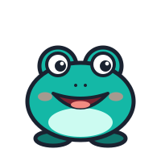

Hallo!
Was übst du heute?
Weiter, wo du warst
Sich vorstellen
Einfach lernen · 3 von 7
Wochenziel
38 von 60 Antworten
Üben
Einfach lernen
Kurze Einheiten, Schritt für Schritt
Wörter
Karteikarten nach Stufe und Thema

Sprechen
Hören, nachsprechen, aufnehmen
Start
Einfach
Wörter
Sprechen
Mehr